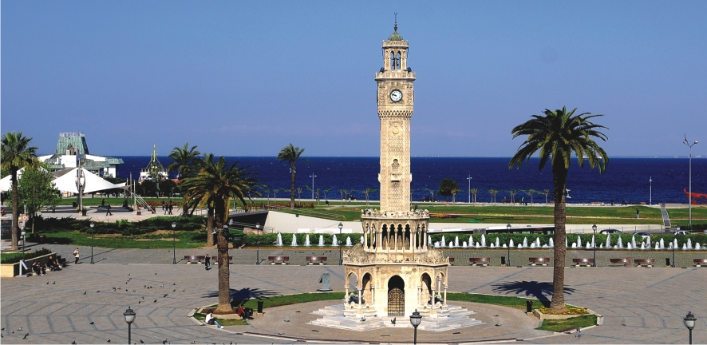
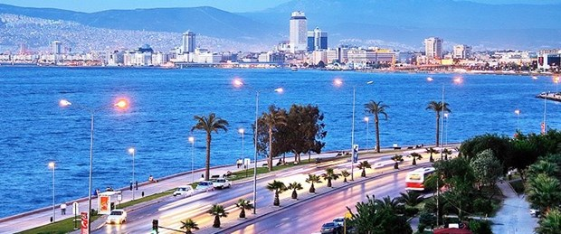
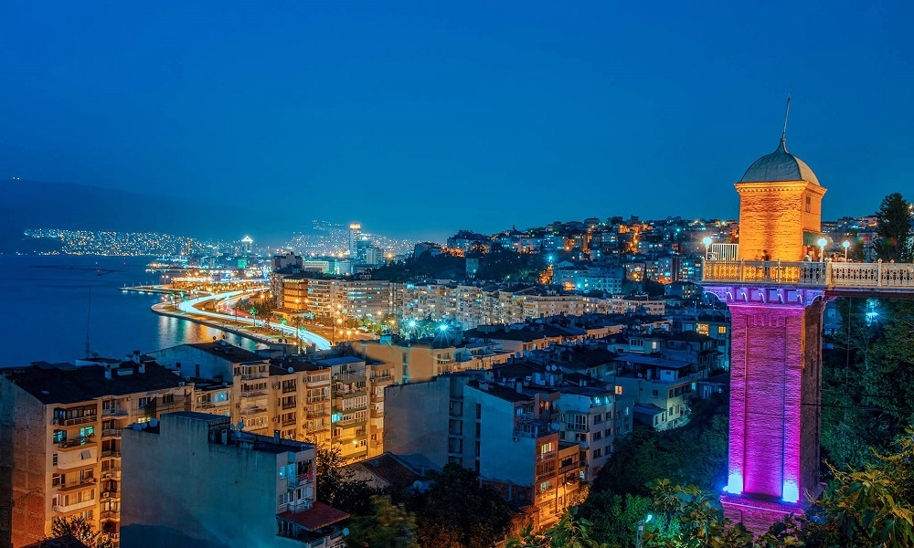
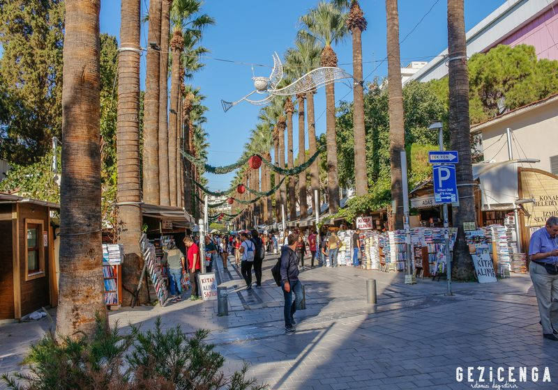

This is İzmir.As you can see it's a coast city. It's famous with its hot weather and nice food.The known population of İzmir is 4,274 millions. In accient history İzmir's name was Smyrna, the name remained until 28 March 1930 after that the name İzmir has been made recognized internationally.The city of İzmir is composed of several metropolitan districts. Of these, Konak district corresponds to historical İzmir, this district's area having constituted the "İzmir Municipality" area until 1984. With the constitution of the "Greater İzmir Metropolitan Municipality" , the city of İzmir grouped together initially nine, and more recently eleven, metropolitan districts, namely Balçova, Bayraklı, Bornova, Buca, Çiğli, Gaziemir, Güzelbahçe, Karabağlar, Karşıyaka, Konak and Narlıdere.[citation needed] In an ongoing process, the Mayor of İzmir was also vested with authority over additional districts reaching from Bergama in the north to Selçuk in the south, bringing the number of districts considered as being part of İzmir to twenty-one, two of these having been only partially administratively included in İzmir.
İzmir has almost 4,000 years of recorded urban history and possibly even longer as an advanced human settlement. Set in an advantageous location at the head of a gulf in a deep indentation midway along the western Anatolian coast, the city has been one of the principal mercantile cities of the Mediterranean Sea for much of its history. Its port is Turkey's primary port for exports in terms of the freight handled and its free zone, a Turkish-U.S. joint-venture established in 1990, is the leader among the twenty in Turkey. The workforce, and particularly its rising class of young professionals, is concentrated either in the city or in its immediate vicinity (such as in Manisa and Turgutlu), and as either larger companies or SMEs, affirm their names with an increasingly wider global scale and intensity. Politically, İzmir is considered a stronghold of the Republican People's Party.İzmir hosted the Mediterranean Games in 1971 and more recently the World University Games (Universiade) in 2005. A bid submitted to the BIE to host the Universal Expo 2015, in March 2008, lost to Milan. Modern İzmir also incorporates the nearby ancient cities of Ephesus, Pergamon, Sardis and Klazomenai, and centers of international tourism such as Kuşadası, Çeşme, Mordoğan and Foça.When the Ottomans took over İzmir in the 15th century, they did not inherit compelling historical memories, unlike the two other key points of the trade network, namely Istanbul and Aleppo. The emergence of İzmir as a major international port by the 17th century was largely a result of the attraction it exercised over foreigners, and the city's European orientation.
The modern name "İzmir" is the Turkish rendering of the original Greek name "Smyrna" and "Smyrne" (Σμύρνη). In medieval times, Westerners used forms like Smire, Zmirra, Esmira, Ismira, which was rendered as İzmir into Turkish, originally written as ايزمير with the Ottoman Turkish alphabet. In ancient Anatolia, the name of a locality called Ti-smurna is mentioned in some of the Level II tablets from the Assyrian colony in Kültepe (first half of the 2nd millennium BC), with the prefix ti- identifying a proper name, although it is not established with certainty that this name refers to modern-day İzmir.The region of İzmir was situated on the southern fringes of the Yortan culture in Anatolia's prehistory, knowledge of which is almost entirely drawn from its cemeteries.In the second half of the 2nd millennium BC, it was in the western end of the extension of the still largely obscure Arzawa Kingdom, an offshoot and usually a dependency of the Hittites, who themselves spread their direct rule as far as the coast during their Great Kingdom. That the realm of the 13th century BC local Luwian ruler, who is depicted in the Kemalpaşa Karabel rock carving at a distance of only 50 km from İzmir was called the Kingdom of Myra may also leave grounds for association with the city's name.The latest known rendering in Greek of the city's name is the Aeolic Greek Μύρρα Mýrrha, corresponding to the later Ionian and Attic Σμύρνα (Smýrna) or Σμύρνη (Smýrnē), both presumably descendants of a Proto-Greek form *Smúrnā. Some would see in the city's name a reference to the name of an Amazon called Smyrna said to have seduced Theseus, leading him to name the city in her honor. Others link the name to the Myrrha commifera shrub, a plant producing the aromatic resin called myrrh that is indigenous to the Middle East and northeastern Africa, which was the city's chief export in antiquity. The Romans took over this name as Smyrna, which is still the name used in English when referring to the city in pre-Turkish times. In Ottoman Turkish the town's name was ايزمير Izmīr.In English, the city was called Smyrna into the 20th century. Izmir (sometimes İzmir) was adopted in English and most foreign languages after Turkey adopted the Latin alphabet in 1928 and urged other countries to use the city's Turkish name.
İzmir prides itself with its busy schedule of trade fairs, exhibitions and congresses. The fair and the festival are held in the compound of - İzmir's vast inner city park named Kültürpark in the first days of September, and organized by İZFAŞ, a depending company of İzmir Metropolitan Municipality. The annual International İzmir Festival, which begins in mid-June and continues until mid-July, has been organized since 1987. During the festival, many world-class performers such as soloists and virtuosi, orchestras, dance companies, rock and jazz groups have given recitals and performances at various venues in the city and its surrounding areas; including the ancient theatres at Ephesus (near Selçuk) and Metropolis (an ancient Ionian city situated near the town of Torbalı.) The festival is a member of the European Festivals Association since 2003.The İzmir European Jazz Festival is among the numerous events organized every year by the İKSEV (İzmir Foundation for Culture, Arts and Education) since 1994. The festival aims to bring together masters and lovers of jazz with the aim to generate feelings of love, friendship and peace.The International İzmir Short Film Festival is organized since 1999 and is a member of the European Coordination of Film Festivals.İzmir Metropolitan Municipality has built the Ahmet Adnan Saygun Art Center on a 21,000 m2 land plot in the Güzelyalı district, in order to contribute to the city's culture and art life. The acoustics of the center have been prepared by ARUP which is a world-famous company in this field.İzmir's cuisine has largely been affected by its multicultural history, hence the large variety of food originating from the Aegean and Mediterranean regions. Population movement from Eastern and South East Anatolia regions has enriched the local cuisine. Another factor is the large and fertile area of land surrounding the region which grows a rich selection of vegetables. There is considerable culinary usage of green leaf vegetables and wild plants amongst the residents, especially those with insular heritage, such as the immigrants from Crete. Some of the common dishes found here are the tarhana soup (made from dried yoghurt and tomatoes), "İzmir" köfte, sulu köfte, keşkek (boiled wheat with meat), zerde (sweetened rice with saffron) and mücver (made from zucchine and eggs). A Sephardic contribution to the Turkish cuisine, boyoz and lokma are pastries associated with İzmir. Kumru is a special kind of sandwich that is associated particularly with the Çeşme district and features cheese and tomato in its basics, with sucuk also added sometimes.



